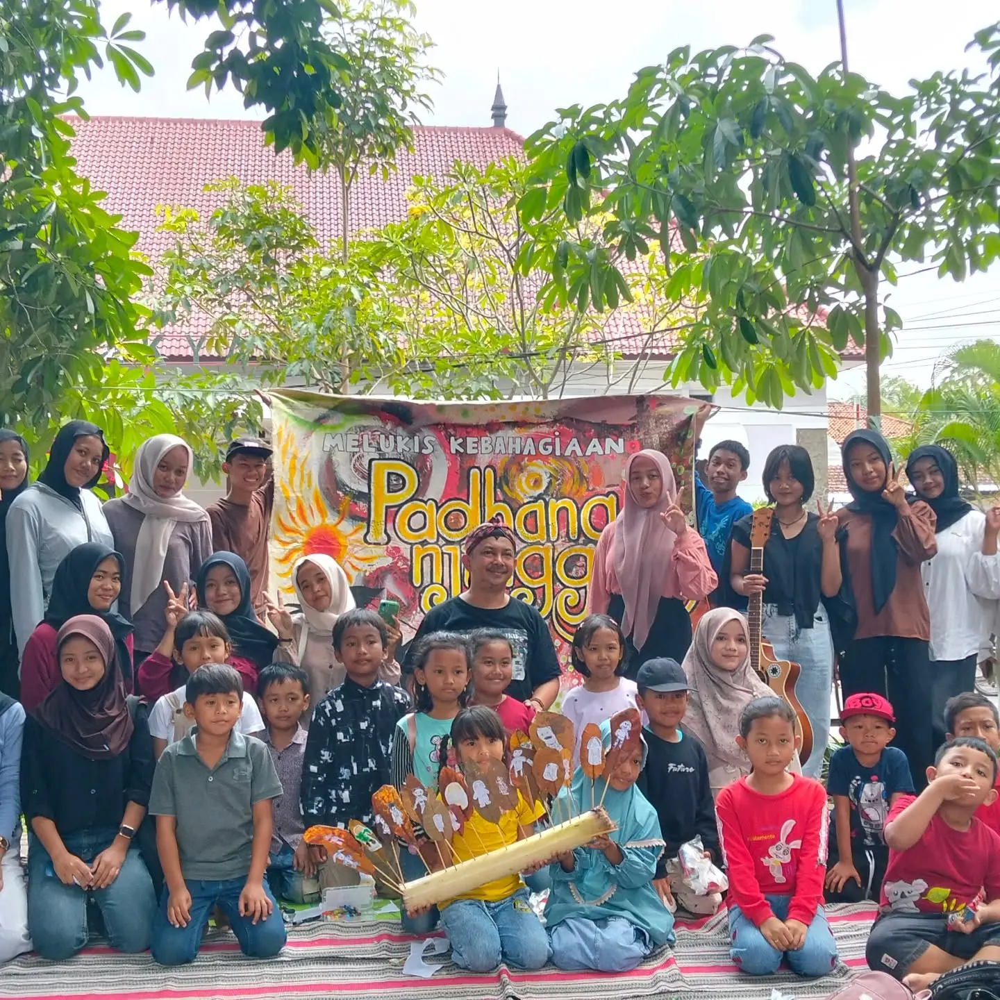
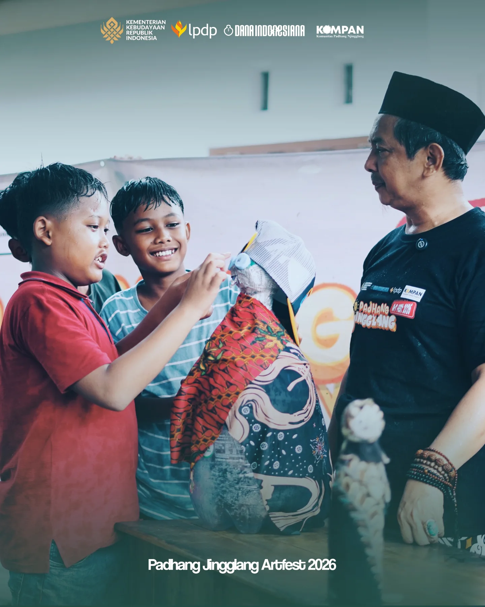

Ruang Bertumbuh,
Berkarya,
& Berbagi Kebahagiaan.
Belajar, bermain, bersholawat, menggambar, bercerita, dan berkreasi — menggambar kebahagiaan anak-anak Indonesia sejak 2009.

BCMK Kembali ke Alun-alun

Komunitas Padhang Njingglang
Komunitas Bahagia Anak — Berdiri Sejak 2009
KOMPAN didirikan pada 2009 oleh Anang Prasetyo, seniman sekaligus pendidik yang prihatin melihat permainan tradisional yang sosial dan komunal bergeser ke permainan digital yang lebih individual. Komunitas ini menjadi wadah bagi generasi muda untuk mendampingi anak melalui kegiatan BCMK dan Aktivasi Memori Bahagia.
Cerita di Balik Setiap Karya
Inisiatif rutin KOMPAN disusun dengan pendekatan ramah anak tanpa paksaan kurikulum kaku, mengedepankan keberanian menggores dan berbagi rasa.

Pameran Seni Rupa — ART FEST Anak Nusantara
Pameran apresiasi karya murni anak-anak yang memajang puluhan goresan jujur tanpa penilaian juara. Ruang ini mendidik publik untuk menghargai proses kreatif dan kejujuran imajinasi anak daripada sekadar kesempurnaan teknik.

Menggambar, Menulis, dan Bercerita Bersama Anak
Lokakarya mingguan di mana anak-anak diajak menyusun cerita pendek bergambar, merakit buku dongeng saku sendiri, serta menyuarakan perasaan mereka secara santai.

Kegiatan Sosial, Kebudayaan, dan Merawat Ruang Ramah Anak
Tidak hanya melukis di atas kertas, anak-anak dan warga berkolaborasi mempercantik gang kampung, membuat perpustakaan swadaya terbuka, mementaskan dongeng wayang karton, serta menumbuhkan kepedulian lingkungan sejak dini.
Artikel terbaru dari KOMPAN
Goresan & Momen Ceria
Postingan terbaru tentang kegiatan dan cerita KOMPAN, langsung dari profil Anang Prasetyo.
Memuat postingan terbaru…
Kabar Hangat dari Akun Resmi Kami
Ikuti cerita terbaru, karya anak, dan dokumentasi kegiatan KOMPAN langsung dari laman Instagram resmi Komunitas Padhang Jingglang.
Ikuti Instagram KOMPAN north_eastBertumbuh Bersama Sejak 2009
KOMPAN didirikan pada 2009 oleh Anang Prasetyo, seniman sekaligus pendidik yang ingin menjaga ruang bermain tradisional anak yang bersifat sosial dan komunal. KOMPAN menjadi wadah bagi generasi muda untuk ikut mendampingi tumbuh kembang anak.
Melalui pelatihan BCMK (bermain, cerita, menyanyi, dan kreativitas), mahasiswa belajar menjadi pecinta dan pendidik anak. Kegiatan yang berawal di Alun-alun Tulungagung dan base camp KOMPAN kemudian menjangkau Yogyakarta, Tuban, Batu, Kediri, dan Blitar, sekaligus menggerakkan AMB (Aktivasi Memori Bahagia).

“Anak-anak tidak memerlukan kurikulum untuk bahagia; mereka butuh didengarkan, dipercaya, dan diberi ruang untuk mewarnai dunianya.”
— Penggerak Komunitas Padhang NjingglangArsip Jejak Perjalanan

Festival Semarak Padhang 2024
Pameran 140 karya rupa anak dan karnaval topeng kertas daur ulang.
Penerbitan Buku Saku Cerita Kami
Kompilasi 30 cerita dongeng orisinal karya anak-anak sanggar Padhang Njingglang.
Revitalisasi Ruang Main Kampung
Kolaborasi warga menyulap pekarangan kosong menjadi arena kreasi ramah anak.
Paket Krayon Keliling Masa Pandemi
Distribusi 500 paket alat gambar mandiri ke rumah-rumah anak agar tetap gembira.
Satu Dekade Padhang Njingglang (10 Tahun)
Pameran retrospektif karya anak dari angkatan pertama (2009) hingga 2019.
Kelahiran Komunitas Padhang Njingglang
Inisiasi perdana kelas menggambar santai mingguan beralaskan tikar pandan.Mari Bergabung Merawat Ceria & Imajinasi Anak Indonesia
Apakah Anda seorang seniman, pendongeng, mahasiswa, donatur buku, atau orang tua yang ingin berbagi waktu? Pintu sanggar Padhang Njingglang selalu terbuka lebar untuk niat baik.